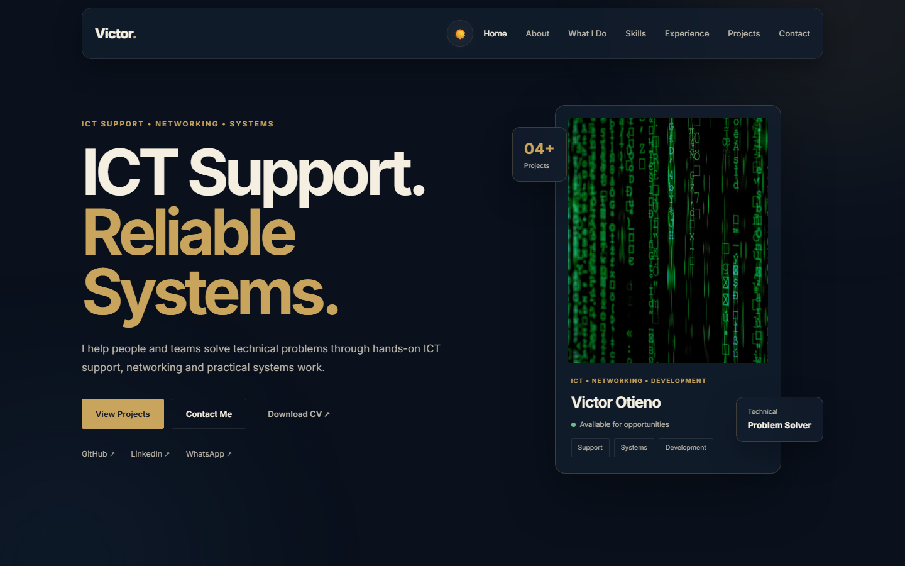
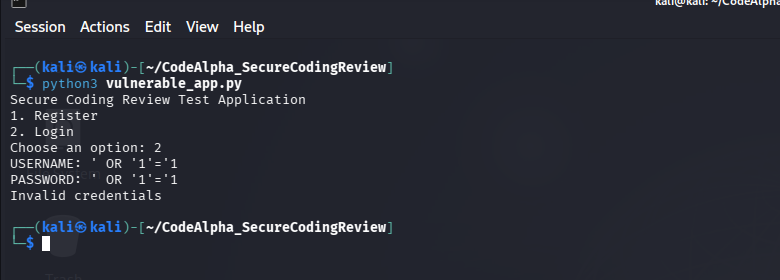

ICT Support
User support, troubleshooting, system assistance and day-to-day ICT operations.
ICT SUPPORT • NETWORKING • SYSTEMS
I help people and teams solve technical problems through hands-on ICT support, networking and practical systems work.
ICT • NETWORKING • DEVELOPMENT
01 — ABOUT
I am an ICT professional focused on using technology to solve real-world problems and make digital systems more reliable, efficient and accessible.
My experience covers technical support, networking, systems, web development, databases and cybersecurity. I enjoy understanding technical challenges and turning them into practical solutions.
Identifying technical issues and developing practical solutions.
Supporting users, systems and technology infrastructure.
Creating useful web applications and digital solutions.
02 — WHAT I DO
User support, troubleshooting, system assistance and day-to-day ICT operations.
Network configuration, troubleshooting and infrastructure support.
Responsive and user-friendly websites and web-based digital solutions.
Database development, information management and system support.
Secure coding practices, network security concepts and security-focused projects.
Breaking down complex technical problems into clear and practical solutions.
03 — SKILLS
04 — EXPERIENCE
Aga Khan Hospital Kisumu
Troubleshooting day-to-day user issues and responding to ICT service requests.
Assisting with network connectivity and infrastructure troubleshooting.
Working with server environments and supporting day-to-day systems.
Investigating reported issues and helping restore reliable ICT services.
05 — CASE STUDIES
Featured story
Healthcare ICT supportI focus on translating day-to-day technical issues into stable, repeatable solutions that keep people productive and systems reliable.
Designed a support model for tracking issues, routing requests and improving visibility.
Analysed risk areas and strengthened application safety through secure implementation practices.
Built a network sniffer to observe traffic patterns and support deeper troubleshooting work.
06 — APPROACH
Understand the problem, users and technical requirements.
Investigate the issue and identify practical solutions.
Implement reliable and user-focused solutions.
Test, refine and continuously improve the solution.
07 — PROJECTS

01 — WEB DEVELOPMENT
A personal brand site built to present my technical skill set, work history and project work in a clear, modern format.
02 — SYSTEMS
A support-focused internal workflow concept for handling service requests, prioritising issues and improving accountability across teams.

03 — CYBERSECURITY
A security-focused review that examines vulnerable code paths, safe authentication patterns and protection against common application attacks.
Packet #1
Time : 2026-09-16 04:17:33
Source : 10.0.2.15
Destination : 8.8.8.8
Protocol : ICMP
Ports : Echo/Control Message04 — NETWORKING
A Python and Scapy tool for observing packet data and learning how traffic flows through a network environment during troubleshooting and analysis.
08 — CONTACT
Have a technical challenge, project or opportunity? Let's start a conversation.